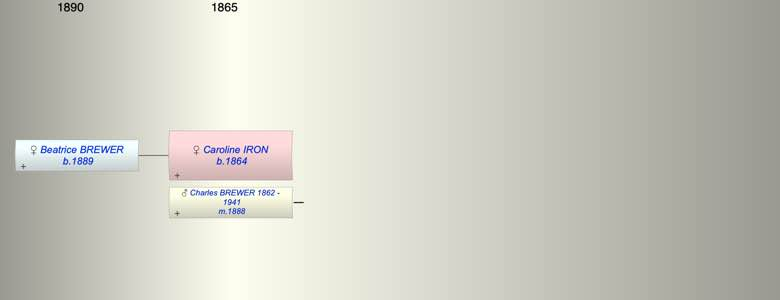

| [Index] |
| Caroline Grace IRON (1864 - ) |
|  |
| b. 1864 |
| m. 05 Nov 1888 Charles Hooper BREWER (1862 - 1941) at Cockington Devon |
| Near Relatives of Caroline Grace IRON (1864 - ) | ||||||
| Relationship | Person | Born | Birth Place | Died | Death Place | Age |
| Father in Law | Samulel Watts BREWER | 29 Oct 1837 | Exminster | 1915 | 78 | |
| Mother in Law | Ann HOOPER | 1838 | 1905 | 67 | ||
| Self | Caroline Grace IRON | 1864 | ||||
| Husband | Charles Hooper BREWER | 1862 | 1941 | 79 | ||
| Daughter | Beatrice Hilda Louise BREWER | 1889 | Teignmouth | |||
| Son in Law | Sidney Charles SIMMS | |||||
| Nephew | William George BREWER | 1900 | West Teignmouth | |||
| Brother in Law | William George BREWER | 1863 | ||||
| Brother in Law | Frank Hooper BREWER | 1865 | ||||
| Brother in Law | Samuel W BREWER | 1868 | ||||
| Brother in Law | Living or Recently Deceased | |||||
| Sister in Law | Bessie Lilian ??? BREWER | 1877 | ||||
| Sister in Law | Lilian BREWER | 1878 | ||||
| Events in Caroline Grace IRON (1864 - )'s life | |||||
| Date | Age | Event | Place | Notes | Src |
| 1864 | Caroline Grace IRON was born | ||||
| 05 Nov 1888 | 24 | Married Charles Hooper BREWER (aged 26) | Cockington Devon | Note 1 | |
| 1889 | 25 | Birth of daughter Beatrice Hilda Louise BREWER | Teignmouth | ||
| 1941 | 77 | Death of husband Charles Hooper BREWER (aged 79) | |||
| Personal Notes: |
| Not found |
| Created on a Mac™ using iFamily for Mac™ on 15 Sep 2023 |